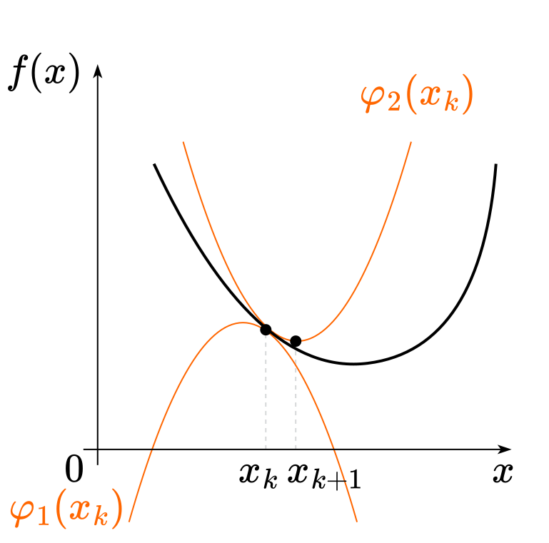
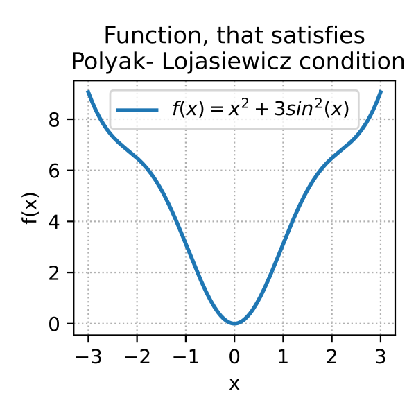
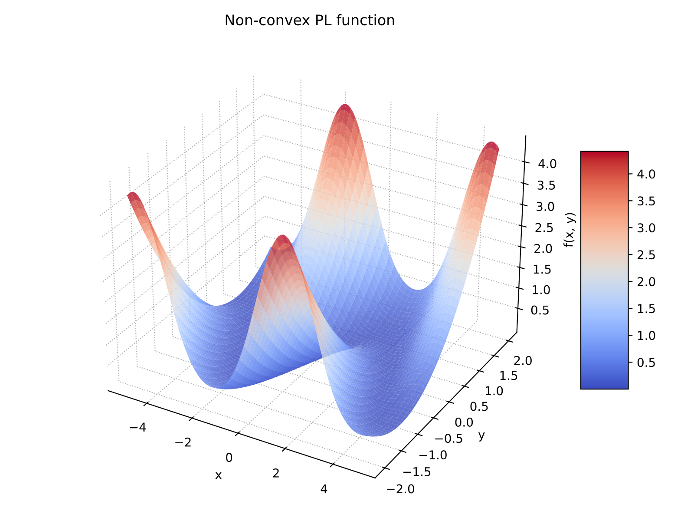
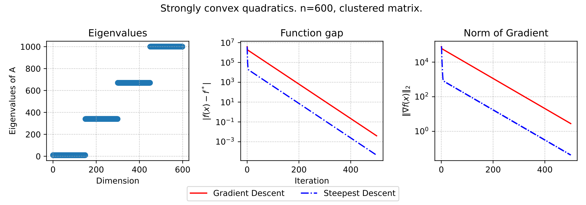
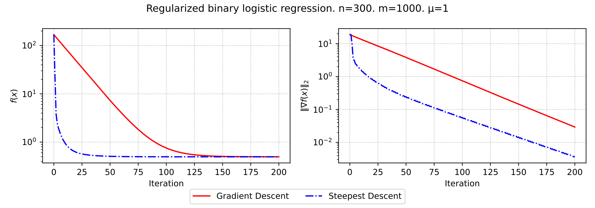

Gradient descent
@article{cauchy1847methode,
title={M{\'e}thode g{\'e}n{\'e}rale pour la r{\'e}solution des systemes d’{\'e}quations simultan{\'e}es}, author={Cauchy, Augustin},
journal={Comp. Rend. Sci. Paris},
volume={25},
number={1847},
pages={536--538},
year={1847}
}1 Summary
A classical problem of function minimization is considered.
\tag{GD} x_{k+1} = x_k - \eta_k\nabla f(x_k)
- The bottleneck (for almost all gradient methods) is choosing step-size, which can lead to the dramatic difference in method’s behavior.
- One of the theoretical suggestions: choosing stepsize inversly proportional to the gradient Lipschitz constant \eta_k = \dfrac{1}{L}.
- In huge-scale applications the cost of iteration is usually defined by the cost of gradient calculation (at least \mathcal{O}(p)).
- If function has Lipschitz-continious gradient, then method could be rewritten as follows:
\begin{align*}x_{k+1} &= x_{k}-\dfrac{1}{L} \nabla f\left(x_{k}\right)= \\ &= \arg \min\limits_{x \in \mathbb{R}^{n}}\left\{f\left(x_{k}\right)+\left\langle\nabla f\left(x_{k}\right), x-x_{k}\right\rangle+\frac{L}{2}\left\|x-x_{k}\right\|_{2}^{2}\right\} \end{align*}
2 Intuition
2.1 Direction of local steepest descent
Let’s consider a linear approximation of the differentiable function f along some direction h, \|h\|_2 = 1:
f(x + \eta h) = f(x) + \eta \langle f'(x), h \rangle + o(\eta)
We want h to be a decreasing direction:
f(x + \eta h) < f(x)
f(x) + \eta \langle f'(x), h \rangle + o(\eta) < f(x)
and going to the limit at \eta \rightarrow 0:
\langle f'(x), h \rangle \leq 0
Also from Cauchy–Bunyakovsky–Schwarz inequality:
|\langle f'(x), h \rangle | \leq \| f'(x) \|_2 \| h \|_2 \;\;\;\to\;\;\; \langle f'(x), h \rangle \geq -\| f'(x) \|_2 \| h \|_2 = -\| f'(x) \|_2
Thus, the direction of the antigradient
h = -\dfrac{f'(x)}{\|f'(x)\|_2}
gives the direction of the steepest local decreasing of the function f.
The result of this method is
x_{k+1} = x_k - \eta f'(x_k)
2.2 Gradient flow ODE
Let’s consider the following ODE, which is referred as Gradient Flow equation.
\tag{GF} \frac{dx}{dt} = -f'(x(t))
and discretize it on a uniform grid with \eta step:
\frac{x_{k+1} - x_k}{\eta} = -f'(x_k),
where x_k \equiv x(t_k) and \eta = t_{k+1} - t_k - is the grid step.
From here we get the expression for x_{k+1}
x_{k+1} = x_k - \eta f'(x_k),
which is exactly gradient descent.

2.3 Necessary local minimum condition
\begin{align*} & f'(x) = 0\\ & -\eta f'(x) = 0\\ & x - \eta f'(x) = x\\ & x_k - \eta f'(x_k) = x_{k+1} \end{align*}
This is, surely, not a proof at all, but some kind of intuitive explanation.
2.4 Minimizer of Lipschitz parabola
Some general highlights about Lipschitz properties are needed for explanation. If a function f: \mathbb{R}^n \to \mathbb{R} is continuously differentiable and its gradient satisfies Lipschitz conditions with constant L, then \forall x,y \in \mathbb{R}^n:
|f(y) - f(x) - \langle \nabla f(x), y-x \rangle| \leq \frac{L}{2} \|y-x\|^2,
which geometrically means, that if we’ll fix some point x_0 \in \mathbb{R}^n and define two parabolas:
\phi_1(x) = f(x_0) + \langle \nabla f(x_0), x - x_0 \rangle - \frac{L}{2} \|x-x_0\|^2,
\phi_2(x) = f(x_0) + \langle \nabla f(x_0), x - x_0 \rangle + \frac{L}{2} \|x-x_0\|^2.
Then
\phi_1(x) \leq f(x) \leq \phi_2(x) \quad \forall x \in \mathbb{R}^n.
Now, if we have global upper bound on the function, in a form of parabola, we can try to go directly to its minimum.
\begin{align*} & \nabla \phi_2(x) = 0 \\ & \nabla f(x_0) + L (x^* - x_0) = 0 \\ & x^* = x_0 - \frac{1}{L}\nabla f(x_0) \\ & x_{k+1} = x_k - \frac{1}{L} \nabla f(x_k) \end{align*}

This way leads to the \frac{1}{L} stepsize choosing. However, often the L constant is not known.
But if the function is twice continuously differentiable and its gradient has Lipschitz constant L, we can derive a way to estimate this constant \forall x \in \mathbb{R}^n:
\|\nabla^2 f(x) \| \leq L
or
-L I_n \preceq \nabla^2 f(x) \preceq L I_n
3 Stepsize choosing strategies
Stepsize choosing strategy \eta_k significantly affects convergence. General line search algorithms might help in choosing scalar parameter.
3.1 Constant stepsize
For f \in C_L^{1,1}:
\eta_k = \eta
f(x_k) - f(x_{k+1}) \geq \eta \left(1 - \frac{1}{2}L\eta \right) \|\nabla f(x_k)\|^2
With choosing \eta = \frac{1}{L}, we have:
f(x_k) - f(x_{k+1}) \geq \dfrac{1}{2L}\|\nabla f(x_k)\|^2
3.2 Fixed sequence
\eta_k = \dfrac{1}{\sqrt{k+1}}
The latter 2 strategies are the simplest in terms of implementation and analytical analysis. It is clear that this approach does not often work very well in practice (the function geometry is not known in advance).
3.3 Exact line search aka steepest descent
\eta_k = \text{arg}\min_{\eta \in \mathbb{R^+}} f(x_{k+1}) = \text{arg}\min_{\eta \in \mathbb{R^+}} f(x_k - \eta \nabla f(x_k))
More theoretical than practical approach. It also allows you to analyze the convergence, but often exact line search can be difficult if the function calculation takes too long or costs a lot.
Interesting theoretical property of this method is that each following iteration is orthogonal to the previous one:
\eta_k = \text{arg}\min_{\eta \in \mathbb{R^+}} f(x_k - \eta \nabla f(x_k))
Optimality conditions:
\nabla f(x_{k+1})^\top \nabla f(x_k) = 0

4 Convergence analysis
4.1 Strongly convex quadratics
4.1.1 Coordinate shift
Consider the following quadratic optimization problem: \min\limits_{x \in \mathbb{R}^d} f(x) = \min\limits_{x \in \mathbb{R}^d} \dfrac{1}{2} x^\top A x - b^\top x + c, \text{ where }A \in \mathbb{S}^d_{++}.
- Firstly, without loss of generality we can set c = 0, which will or affect optimization process.
- Secondly, we have a spectral decomposition of the matrix A = Q \Lambda Q^T.
- Let’s show, that we can switch coordinates to make an analysis a little bit easier. Let \hat{x} = Q^T(x - x^*), where x^* is the minimum point of initial function, defined by Ax^* = b. At the same time x = Q\hat{x} + x^*.
\begin{align*} f(\hat{x}) &= \frac{1}{2} (Q\hat{x} + x^*)^\top A (Q\hat{x} + x^*) - b^\top (Q\hat{x} + x^*) \\ &= \frac{1}{2} \hat{x}^\top Q^\top A Q \hat{x} + \frac{1}{2} (x^*)^\top A x^* + (x^*)^\top A Q\hat{x} - b^\top Q\hat{x} - b^\top x^* \\ &= \frac{1}{2} \hat{x}^\top \Lambda \hat{x} + \frac{1}{2} (x^*)^\top A x^* + (x^*)^\top A Q\hat{x} - (x^*)^\top A^\top Q\hat{x} - (x^*)^\top A x^* \\ &= \frac{1}{2} \hat{x}^\top \Lambda \hat{x} - \frac{1}{2} (x^*)^\top A x^* \\ &\simeq \frac{1}{2} \hat{x}^\top \Lambda \hat{x} \end{align*}

4.1.2 Convergence analysis
Now we can work with the function f(x) = \frac12 x^T \Lambda x with x^* = 0 without loss of generality (drop the hat from the \hat{x})
\begin{align*} x^{k+1} &= x^k - \alpha^k \nabla f(x^k) \\ &= x^k - \alpha^k \Lambda x^k \\ &= (I - \alpha^k \Lambda) x^k \\ x^{k+1}_{(i)} &= (1 - \alpha^k \lambda_{(i)}) x^k_{(i)} \quad \text{(for $i$-th coordinate)} \\ x^{k}_{(i)} &= (1 - \alpha^k \lambda_{(i)})^k x^0_{(i)} \end{align*}
Let’s use constant stepsize \alpha^k = \alpha. Convergence condition: \rho(\alpha) = \max_{i} |1 - \alpha \lambda_{(i)}| < 1 Remember, that \lambda_{\text{min}} = \mu > 0, \lambda_{\text{max}} = L \geq \mu.}
\begin{align*} & |1 - \alpha L| < 1 \\ & -1 < 1 - \alpha L < 1 \\ & \alpha < \frac{2}{L} \quad \alpha L > 0 \end{align*}
\alpha < \frac{2}{L} is needed for convergence.
\begin{align*} \rho^* &= \min_{\alpha} \rho(\alpha) = \min_{\alpha} \max_{i} |1 - \alpha \lambda_{(i)}| \\ &= \min_{\alpha} \left\{|1 - \alpha \mu|, |1 - \alpha L| \right\} \\ \alpha^*: & \quad 1 - \alpha^* \mu = \alpha^* L - 1 \\ & \alpha^* = \frac{2}{\mu + L} \quad \rho^* = \frac{L - \mu}{L + \mu} \\ x^{k+1}_{(i)} &= \left( \frac{L - \mu}{L + \mu} \right)^k x^0_{(i)} \\ \|x^{k+1}\|_2 &\leq \left( \frac{L - \mu}{L + \mu} \right)^k \|x^0\|_2 \\ f(x^{k+1}) &\leq \left( \frac{L - \mu}{L + \mu} \right)^{2k} f(x^0) \end{align*}
So, we have a linear convergence in the domain with rate \frac{\varkappa - 1}{\varkappa + 1} = 1 - \frac{2}{\varkappa + 1}, where \varkappa = \frac{L}{\mu} is sometimes called condition number of the quadratic problem.
| \varkappa | \rho | Iterations to decrease domain gap 10 times | Iterations to decrease function gap 10 times |
|---|---|---|---|
| 1.1 | 0.05 | 1 | 1 |
| 2 | 0.33 | 3 | 2 |
| 5 | 0.67 | 6 | 3 |
| 10 | 0.82 | 12 | 6 |
| 50 | 0.96 | 58 | 29 |
| 100 | 0.98 | 116 | 58 |
| 500 | 0.996 | 576 | 288 |
| 1000 | 0.998 | 1152 | 576 |
4.1.3 Condition number \varkappa
4.2 Convex case
4.2.1 Lipischitz continuity of the gradient
Assume that f: \mathbb{R}^n \to \mathbb{R} is convex and differentiable, and additionally \|\nabla f(x) − \nabla f(y) \| \leq L \|x − y \| \; \forall x, y \in \mathbb{R}^n
i.e. , \nabla f is Lipschitz continuous with constant L > 0.
Since \nabla f Lipschitz with constant L, which means \nabla^2 f \preceq LI, we have \forall x, y, z:
(x − y)^\top(\nabla^2 f(z) − LI)(x − y) \leq 0
(x − y)^\top\nabla^2 f(z)(x − y) \leq L \|x-y\|^2
Now we’ll consider second order Taylor approximation of f(y) and Taylor’s Remainder Theorem (we assume, that the function f is continuously differentiable), we have \forall x, y, \exists z ∈ [x, y]:
\begin{align*} f(y) &= f(x) + \nabla f(x)^\top(y − x) + \frac{1}{2}(x − y)^\top \nabla^2 f(z)(x − y) \\ & \leq f(x) + \nabla f(x)^\top(y − x) + \frac{L}{2} \|x-y\|^2 \end{align*}
For the gradient descent we have x = x_k, y = x_{k+1}, x_{k+1} = x_k - \eta_k\nabla f(x_k):
\begin{align*} f(x_{k+1}) &\leq f(x_k) + \nabla f(x_k)^\top(-\eta_k\nabla f(x_k)) + \frac{L}{2} \| \eta_k\nabla f(x_k) \|^2 \\ & \leq f(x_k) - \left( 1 - \dfrac{L\eta}{2}\right)\eta \|\nabla f(x_k)\|^2 \end{align*}
4.2.2 Optimal constant stepsize
Now, if we’ll consider constant stepsize strategy and will maximize \left( 1 - \dfrac{L\eta}{2}\right)\eta \to \max\limits_{\eta}, we’ll get \eta = \dfrac{1}{L}.
f(x_{k+1}) \leq f(x_k) - \dfrac{1}{2L}\|\nabla f(x_k)\|^2
4.2.3 Convexity
f(x_{k}) \leq f(x^*) + \nabla f(x_k)^\top (x_k − x^*)
That’s why we have:
\begin{align*} f(x_{k+1}) & \leq f(x^*) + \nabla f(x_k)^\top (x_k − x^*) - \dfrac{1}{2L}\|\nabla f(x_k)\|^2 \\ & = f(x^*) + \dfrac{L}{2}\left(\|x_k − x^*\|^2 − \|x_k − x^* − \dfrac{1}{L}\nabla f(x_k)\|^2\right) \\ & = f(x^*) + \dfrac{L}{2}\left(\|x_k − x^*\|^2 − \|x_{k+1} − x^*\|^2\right) \end{align*}
Thus, summing over all iterations, we have:
\begin{align*} \sum\limits_{i=1}^k (f(x_i) - f(x^*)) &\leq \dfrac{L}{2} \left(\|x_0 − x^*\|^2 − \|x_{k} − x^*\|^2\right) \\ & \leq \dfrac{L}{2} \|x_0 − x^*\|^2 = \dfrac{LR^2}{2}, \end{align*}
where R = \|x_0 - x^*\|. And due to function monotonicity:
f(x_k) - f(x^*) \leq \dfrac{1}{k}\sum\limits_{i=1}^k (f(x_i) - f(x^*)) \leq \dfrac{LR^2}{2k} = \dfrac{R^2}{2\eta k}
4.3 Strongly convex case
If the function is strongly convex:
f(y) \geq f(x) + \nabla f(x)^\top (y − x) + \dfrac{\mu}{2}\|y − x \|^2 \; \forall x, y \in \mathbb{R}^n
f(x^*) \geq f(x) + \nabla f(x)^\top (x^* - x) + \frac{\mu}{2}\|x^* - x\|^2
f(x^*) \leq f(x)
\nabla f(x)^\top (x - x^*) \geq f(x) - f(x^*) + \frac{\mu}{2}\|x - x^*\|^2
Since \nabla f Lipschitz with constant L and we proved that
f(x_{k}) - f(x^{k + 1}) \geq \frac{1}{2L} \|\nabla f(x_k)\|^2
We get
f(x_k) - f(x^*) \geq f(x_k) - f(x^{k + 1}) \geq \frac{1}{2L} \|\nabla f(x_k)\|^2
\nabla f(x_k)^\top (x_k - x^*) \geq \frac{1}{2L}\|\nabla f(x_k)\|^2 + \frac{\mu}{2}\|x_k - x^*\|^2 \quad (1)
Then we break down \|x_{k+1} - x^*\|^2
\begin{align*} \|x_{k+1} - x^*\|^2 &= \|(x_k - \eta \nabla f(x_k)) - x^*\|^2 \\ &= \|(x_k - x^*) - \eta \nabla f(x_k)\|^2 \\ \end{align*}
Using \|a-b\|^2 = \|a\|^2 - 2a^\top b + \|b\|^2:
\begin{align*} \|x_{k+1} - x^*\|^2 &= \|x_k - x^*\|^2 - 2\eta \nabla f(x_k)^\top (x_k - x^*) + \eta^2 \|\nabla f(x_k)\|^2 \quad (2) \end{align*}
Multipling by -2\eta inequality (1):
-2\eta \nabla f(x_k)^\top (x_k - x^*) \leq -2\eta \left( \frac{1}{2L}\|\nabla f(x_k)\|^2 + \frac{\mu}{2}\|x_k - x^*\|^2 \right)
-2\eta \nabla f(x_k)^\top (x_k - x^*) \leq -\frac{\eta}{L}\|\nabla f(x_k)\|^2 - \eta\mu\|x_k - x^*\|^2
And then plug into (2):
\begin{align*} \|x_{k+1} - x^*\|^2 &\leq \|x_k - x^*\|^2 - \left(\frac{\eta}{L}\|\nabla f(x_k)\|^2 + \eta\mu\|x_k - x^*\|^2\right) + \eta^2 \|\nabla f(x_k)\|^2 \\ &= \|x_k - x^*\|^2 - \eta\mu\|x_k - x^*\|^2 - \frac{\eta}{L}\|\nabla f(x_k)\|^2 + \eta^2 \|\nabla f(x_k)\|^2 \\ &= (1 - \eta\mu)\|x_k - x^*\|^2 - \eta\left(\frac{1}{L} - \eta\right)\|\nabla f(x_k)\|^2 \end{align*}
Since we choose \eta \leq \frac{1}{L} \frac{1}{L} - \eta \geq 0
-\eta\left(\frac{1}{L} - \eta\right)\|\nabla f(x_k)\|^2 \leq 0
So, we can drop it and get:
\|x_{k+1} − x^*\|^2 \leq (1 − \eta \mu)\|x_k − x^* \|^2
4.4 Polyak-Lojasiewicz smooth case
4.4.1 Polyak-Lojasiewicz condition. Linear convergence of gradient descent without convexity
PL inequality holds if the following condition is satisfied for some \mu > 0, \Vert \nabla f(x) \Vert^2 \geq 2 \mu (f(x) - f^*) \quad \forall x It is interesting, that the Gradient Descent algorithm might converge linearly even without convexity.
The following functions satisfy the PL condition but are not convex. Link to the code
f(x) = x^2 + 3\sin^2(x)

f(x,y) = \dfrac{(y - \sin x)^2}{2}

4.4.2 Convergence analysis
We can use L-smoothness, together with the update rule of the algorithm, to write
\begin{split} f(x^{k+1}) &\leq f(x^{k}) + \langle \nabla f(x^{k}), x^{k+1}-x^{k} \rangle +\frac{L}{2} \| x^{k+1}-x^{k}\|^2\\ &= f(x^{k})-\alpha\Vert \nabla f(x^{k}) \Vert^2 +\frac{L \alpha^2}{2} \| \nabla f(x^{k})\|^2 \\ &= f(x^{k}) - \frac{\alpha}{2} \left(2 - L \alpha \right)\Vert \nabla f(x^{k}) \Vert^2 \\ & \leq f(x^{k}) - \frac{\alpha}{2}\Vert \nabla f(x^{k})\Vert^2, \end{split}
where in the last inequality we used our hypothesis on the stepsize that \alpha L \leq 1.
We can now use the Polyak-Lojasiewicz property to write:
f(x^{k+1}) \leq f(x^{k}) - \alpha \mu (f(x^{k}) - f^*).
The conclusion follows after subtracting f^* on both sides of this inequality and using recursion.
4.4.3 Any \mu-strongly convex differentiable function is a PL-function
Proof
By first order strong convexity criterion: f(y) \geq f(x) + \nabla f(x)^T(y-x) + \dfrac{\mu}{2}\|y-x\|_2^2 Putting y = x^*: \begin{split} f(x^*) &\geq f(x) + \nabla f(x)^T(x^*-x) + \dfrac{\mu}{2}\|x^*-x\|_2^2 \\ f(x) - f(x^*) &\leq \nabla f(x)^T(x-x^*) - \dfrac{\mu}{2}\|x^*-x\|_2^2 \\ &= \left(\nabla f(x)^T - \dfrac{\mu}{2}(x^*-x)\right)^T (x-x^*) \\ &= \frac12 \left(\frac{2}{\sqrt{\mu}}\nabla f(x)^T - \sqrt{\mu}(x^*-x)\right)^T \sqrt{\mu}(x-x^*) \end{split}
Let a = \frac{1}{\sqrt{\mu}}\nabla f(x) and b =\sqrt{\mu}(x-x^*) -\frac{1}{\sqrt{\mu}}\nabla f(x)
Then a+b = \sqrt{\mu}(x-x^*) and a-b=\frac{2}{\sqrt{\mu}}\nabla f(x)-\sqrt{\mu}(x-x^*), which leads to
\begin{split} f(x) - f(x^*) &\leq \frac12 \left(\frac{1}{\mu}\|\nabla f(x)\|^2_2 - \left\|\sqrt{\mu}(x-x^*) -\frac{1}{\sqrt{\mu}}\nabla f(x)\right\|_2^2\right) \\ f(x) - f(x^*) &\leq \frac{1}{2\mu}\|\nabla f(x)\|^2_2, \end{split}
5 Bounds
| Problem | Bound | Iteration number |
|---|---|---|
| Non Convex & Smooth | \|\nabla f(x^k)\|^2 \sim \mathcal{O} \left( \dfrac{1}{k} \right) | k = \mathcal{O}\left(\frac{1}{\epsilon}\right), Sublinear |
| Strongly convex, quadratics | \|x^k - x^*\|_2 \leq \left( \frac{L - \mu}{L + \mu} \right)^k \|x^0 - x^*\|_2 | k = \mathcal{O}\left(\log \frac{1}{\epsilon} \right), Linear |
| Convex Lipschitz-continuous gradient(L) |
f(x_k) - f(x^*) \leq \dfrac{R^2L}{2k} | k = \mathcal{O}\left(\frac{1}{\epsilon}\right), Sublinear |
| f is \mu-Polyak-Lojasiewicz and Lipschitz-continuous gradient(L) | f(x^k) - f^* \leq \left(1 - \frac{\mu}{L}\right)^k (f(x^0) - f^*) | k = \mathcal{O}\left( \log\frac{1}{\epsilon} \right), Linear |
| Smooth & \mu-Strongly Convex | \|x^k - x^*\|^2 \leq \left(1 - \frac{\mu}{L}\right)^k R^2 | k = \mathcal{O}\left( \log\frac{1}{\epsilon} \right), Linear |
- R = \| x_0 - x^*\| - initial distance
6 Numerical experiments
f(x) = \frac{1}{2} x^T A x - b^T x \to \min_{x \in \mathbb{R}^n}

\
f(x) = \frac{1}{2} x^T A x - b^T x \to \min_{x \in \mathbb{R}^n}

\
f(x) = \frac{1}{2} x^T A x - b^T x \to \min_{x \in \mathbb{R}^n}

\
f(x) = \frac{1}{2} x^T A x - b^T x \to \min_{x \in \mathbb{R}^n}

\
f(x) = \frac{1}{2} x^T A x - b^T x \to \min_{x \in \mathbb{R}^n}

\
f(x) = \frac{1}{2} x^T A x - b^T x \to \min_{x \in \mathbb{R}^n}

\
f(x) = \frac{1}{2} x^T A x - b^T x \to \min_{x \in \mathbb{R}^n}

\
f(x) = \frac{\mu}{2} \|x\|_2^2 + \frac1m \sum_{i=1}^m \log (1 + \exp(- y_i \langle a_i, x \rangle)) \to \min_{x \in \mathbb{R}^n}

\
f(x) = \frac{\mu}{2} \|x\|_2^2 + \frac1m \sum_{i=1}^m \log (1 + \exp(- y_i \langle a_i, x \rangle)) \to \min_{x \in \mathbb{R}^n}

\
f(x) = \frac{\mu}{2} \|x\|_2^2 + \frac1m \sum_{i=1}^m \log (1 + \exp(- y_i \langle a_i, x \rangle)) \to \min_{x \in \mathbb{R}^n}

\
f(x) = \frac{\mu}{2} \|x\|_2^2 + \frac1m \sum_{i=1}^m \log (1 + \exp(- y_i \langle a_i, x \rangle)) \to \min_{x \in \mathbb{R}^n}
